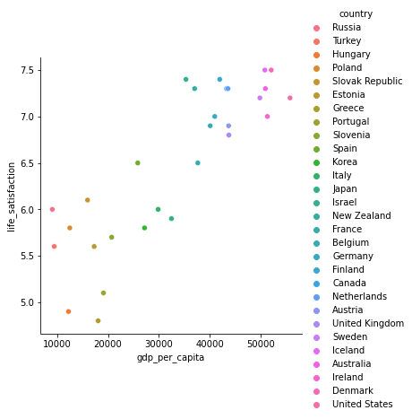

Simple statsmodels model
Contents
Simple statsmodels model¶
Does money make people happier? Simple version without data splitting.
Data preparation¶
import pandas as pd
# Load the data from GitHub
LINK = "https://raw.githubusercontent.com/kirenz/datasets/master/oecd_gdp.csv"
df = pd.read_csv(LINK)
df.head()
| Country | GDP per capita | Life satisfaction | |
|---|---|---|---|
| 0 | Russia | 9054.914 | 6.0 |
| 1 | Turkey | 9437.372 | 5.6 |
| 2 | Hungary | 12239.894 | 4.9 |
| 3 | Poland | 12495.334 | 5.8 |
| 4 | Slovak Republic | 15991.736 | 6.1 |
df.info()
<class 'pandas.core.frame.DataFrame'>
RangeIndex: 29 entries, 0 to 28
Data columns (total 3 columns):
# Column Non-Null Count Dtype
--- ------ -------------- -----
0 Country 29 non-null object
1 GDP per capita 29 non-null float64
2 Life satisfaction 29 non-null float64
dtypes: float64(2), object(1)
memory usage: 824.0+ bytes
# Change column names
df.columns = df.columns.str.lower().str.replace(' ', '_')
df.head()
| country | gdp_per_capita | life_satisfaction | |
|---|---|---|---|
| 0 | Russia | 9054.914 | 6.0 |
| 1 | Turkey | 9437.372 | 5.6 |
| 2 | Hungary | 12239.894 | 4.9 |
| 3 | Poland | 12495.334 | 5.8 |
| 4 | Slovak Republic | 15991.736 | 6.1 |
%matplotlib inline
import seaborn as sns
# Visualize the data
sns.relplot(x="gdp_per_capita", y='life_satisfaction', hue='country', data=df);

Simple linear regression model¶
import statsmodels.formula.api as smf
# Estimate the model
lm = smf.ols(formula ='life_satisfaction ~ gdp_per_capita', data=df).fit()
# Model coefficients
lm.summary()
| Dep. Variable: | life_satisfaction | R-squared: | 0.734 |
|---|---|---|---|
| Model: | OLS | Adj. R-squared: | 0.725 |
| Method: | Least Squares | F-statistic: | 74.67 |
| Date: | Wed, 16 Mar 2022 | Prob (F-statistic): | 2.95e-09 |
| Time: | 16:53:19 | Log-Likelihood: | -16.345 |
| No. Observations: | 29 | AIC: | 36.69 |
| Df Residuals: | 27 | BIC: | 39.42 |
| Df Model: | 1 | ||
| Covariance Type: | nonrobust |
| coef | std err | t | P>|t| | [0.025 | 0.975] | |
|---|---|---|---|---|---|---|
| Intercept | 4.8531 | 0.207 | 23.481 | 0.000 | 4.429 | 5.277 |
| gdp_per_capita | 4.912e-05 | 5.68e-06 | 8.641 | 0.000 | 3.75e-05 | 6.08e-05 |
| Omnibus: | 0.308 | Durbin-Watson: | 1.454 |
|---|---|---|---|
| Prob(Omnibus): | 0.857 | Jarque-Bera (JB): | 0.486 |
| Skew: | -0.094 | Prob(JB): | 0.784 |
| Kurtosis: | 2.394 | Cond. No. | 9.19e+04 |
Notes:
[1] Standard Errors assume that the covariance matrix of the errors is correctly specified.
[2] The condition number is large, 9.19e+04. This might indicate that there are
strong multicollinearity or other numerical problems.
# Plot regression line
sns.lmplot(data=df, x="gdp_per_capita", y="life_satisfaction", ci=False);

# Add the regression predictions (as "pred") to our DataFrame
df['y_pred'] = lm.predict(df.gdp_per_capita)
from statsmodels.tools.eval_measures import mse, rmse
# Performance measures
# MSE
mse(df['life_satisfaction'], df['y_pred'])
0.18075033705835147
# RMSE
rmse(df['life_satisfaction'], df['y_pred'])
0.42514742979153886